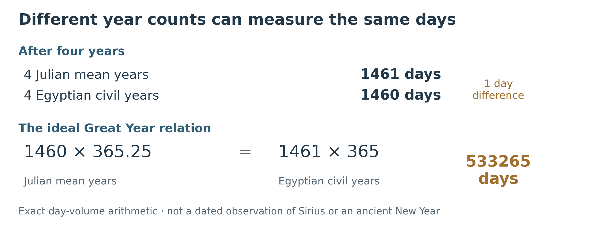
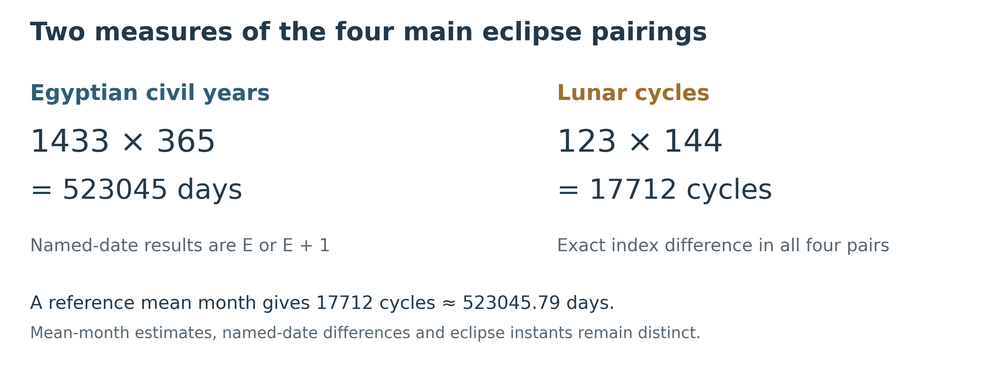
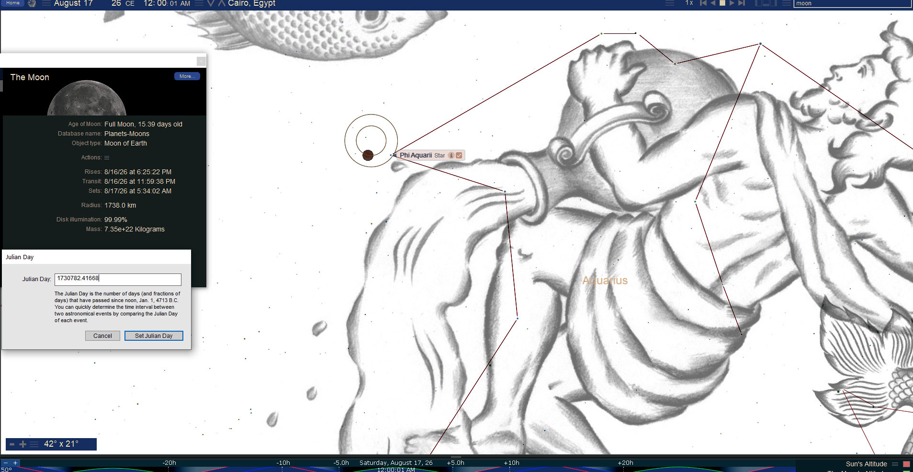
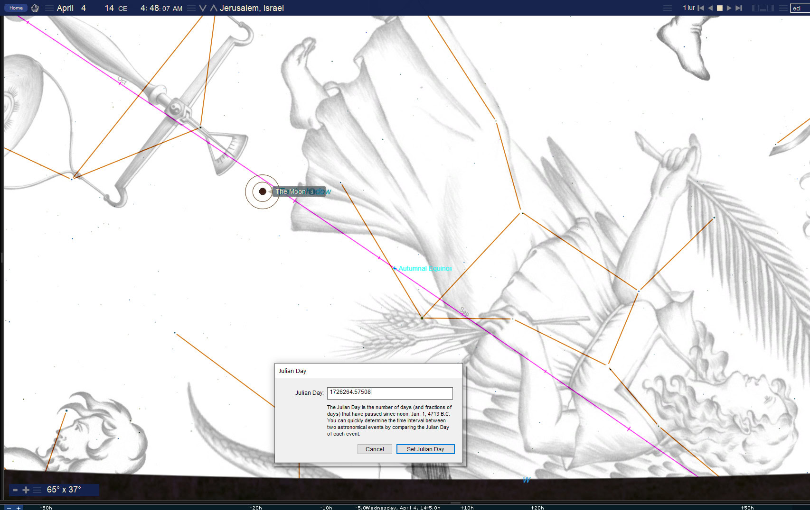

Egyptian Years and the Calendar of Israel
Book 2 · Chapter 7
Counting the interval from the wilderness to the time of Christ
When God brings Israel out of Egypt, He gives the people a new beginning for their months:
“This month is the beginning of months for you; it shall be the first month of your year.”
— Exodus 12:2, BSB
The Passover now stands at the opening of Israel’s year. The people are to reckon their lives from the deliverance God has given them. Egypt remains part of their history, but the calendar of their worship is ordered around His act.[1]
This chapter brings Egypt’s year into the comparison developed in the last two chapters. The Conquest-era eclipses and the later eclipses around Christ’s ministry have already been introduced. Here I count the interval between selected members of those groups in two ways: by Egypt’s 365-day civil year and by the cycles of the Moon.
Four solar pairings produce a strikingly consistent result. Their named Julian dates differ by 1433 Egyptian civil years, either exactly or with one additional day. Their lunar-cycle separation is the same in every case: 17,712 lunations. I read that relationship within the larger witness of the heavens to the God of the Exodus and the coming of Christ. The measures must remain clear if the interpretation is to carry any weight.
The Egyptian year is a measure of days
The unreformed Egyptian civil year contains twelve months of 30 days, followed by five additional days:
12 × 30 + 5 = 365 days.
Those five days are often called epagomenal, meaning added days. This calendar is easy to count because every year has the same length. It also drifts against the seasons. Compared with the ideal Julian mean of 365.25 days, it falls short by one quarter of a day each year: one full day in four years.[2]
Over the long count, the difference produces the familiar ideal Sothic relation:
1460 × 365.25 = 1461 × 365 = 533,265 days.


Thus, one span can be expressed as 1460 Julian mean years or 1461 Egyptian civil years. The year counts differ because the units differ. The relation belongs to the background of the Egyptian Great Year associated with Sirius, or Sothis, whose first return to visibility before dawn marked an important seasonal event.[3]
The arithmetic does not establish a particular ancient observation of Sirius. Visibility depends on the observing place and conditions. Nor should the old wandering civil year be confused with the later Alexandrian calendar, which used a leap-day correction. An Egyptian lunar calendar is another reckoning again. Richard Parker’s study distinguishes these calendar systems and reconstructs the lunar month from morning lunar invisibility, rather than treating it as identical to a first-crescent evening.[4]
I use 365 days below as an explicitly stated measuring unit. A whole number of these years can fit between two selected dates without proving that either date was an observed Egyptian New Year.
Four comparisons with the later solar eclipses
The four earlier events belong to the Conquest selection in Chapter 6. Their later partners fall in AD 26, 27, 29, and 34, within the broader solar comparison around Christ’s ministry. AD 34 closes that comparison; the preferred Passion date remains in AD 33.
Let E name the day volume of 1433 Egyptian civil years:
E = 1433 × 365 = 523,045 days.
The paired Julian dates give these results:[5]
| Conquest era eclipse | Later eclipse | Date difference | Relation to E |
|---|---|---|---|
| July 25, 1407 BC · total | August 1, AD 26 · total | 523,045 days | E |
| July 14, 1406 BC · total | July 22, AD 27 · total | 523,046 days | E + 1 |
| November 17, 1404 BC · total | November 24, AD 29 · total | 523,045 days | E |
| March 1, 1399 BC · hybrid | March 9, AD 34 · total | 523,046 days | E + 1 |
These are differences between the named dates, using the same noon reference for each. The fractional times of greatest eclipse give a different question. Measured from those modeled instants, the four intervals lie about 0.27 to 0.42 day beyond E. The date table should therefore not be described as four identical spans timed to an exact hour.[6]
Two other comparisons fall roughly half a year short. January 18, 1406 BC to August 1, AD 26 gives E − 177 days. August 24, 1399 BC to March 9, AD 34 gives E − 175 days. In lunar-cycle indices, both are six cycles shorter than the four main pairings. That is the shared relation. The whole-day offsets differ by two days, so the displayed arrangement is not an exact day symmetry.[7]
The selection matters here as it did in Chapter 6. These four pairs test the proposed bridge; they are not the whole eclipse record. The wider AD 24–34 catalog contains nine total solar eclipses. The comparison does not depend on calling the four pairings, or an older seven-event selection, exhaustive.
Aaron and the count of lunar cycles
NASA’s lunar-cycle indices supply another way to measure the four main intervals. Each advances by exactly 17,712 lunations, or successive new-moon cycles. That number factors as:
17,712 = 123 × 144.
Aaron’s stated age at death is 123. The 144 factor is 12 × 12. I read this numerical correspondence beside the twelvefold people of God and the larger use of such numbers in Revelation. The multiplication is an interpretive scale: it assigns 144 lunar cycles to each year of Aaron’s life for this comparison. It is not an ordinary conversion of his age into months.[8]


The later solar frame also carries 123 as a month count. From March 28, AD 24 to March 9, AD 34, the interval is 123 lunations and 3633 date-days. Selected intermediate eclipses divide it into three spans of 41 lunations and 1211 date-days. Thus, the long separation between each pair contains 144 blocks of 123 lunar cycles. The arithmetic connects the long interval with the shorter frame without requiring the ancient observers to have calculated either relationship.[9]
Using a reference mean lunar month of about 29.53059 days, 17,712 cycles amount to about 523,045.79 days. That lies close to E + 1. The mean-month multiplication is approximate; the catalog indices count the actual cycles, while the date differences and modeled eclipse times retain their own values.
This is the reason to preserve both measures. The Egyptian civil count and the lunar count bring different aspects of the interval into view. I see their meeting as part of the testimony. I do not have to make their units interchangeable to say that.
The lunar comparison during the mourning for Aaron
The earlier lunar event is the penumbral eclipse discussed in Chapter 6, associated in this reading with Aaron’s mourning season. NASA catalogs it under August 9, 1407 BC in dynamical time. Its modeled greatest phase falls on August 8 in Universal Time. It remains a penumbral eclipse: the Moon does not enter the Earth’s dark umbra.
Its later partner is the partial lunar eclipse of August 17, AD 26. Using the catalog’s greatest-eclipse times on the same dynamical time scale, their separation is:
523,045 days + 23 hours 8 minutes 4 seconds.
That is about E + 0.964 day, with the same 17,712-cycle separation as the four main solar pairings. The seconds reproduce the catalog calculation; they do not establish an ancient observer’s clock reading.[10]
The AD 26 event belongs near midnight at Jerusalem. NASA’s modeled timing places greatest eclipse at about 00:29 in local mean solar time, with the partial umbral phase running approximately 23:11 to 01:46. It is not a sunset eclipse there. The supplied Cairo view illustrates the Water-bearer comparison.[11]


Within the Egyptian setting, I read the poured water beside the Nile and its imagery. The association with Hapi is part of that interpretation. It is not a demonstrated identity between the modern constellation drawing and a particular ancient Egyptian sky figure.
The two lunar events are also different in kind. The earlier penumbral event should not be given a blood-red appearance simply because water-to-blood imagery fits the surrounding argument. The AD 26 eclipse actually takes the Moon into part of the umbra. Neither event needs a surviving human report to belong to the heavenly witness, but its calculated type should be described accurately.
Changing a day’s beginning from midnight to evening or dawn can change its calendar label. It does not change the elapsed interval between two physical events. The lunar result above is therefore a comparison on a single dynamical time scale, not a value to adjust until a desired New Year label appears.[12]
Mourning and the opening of a year
I also compare Aaron’s mourning with the proposed Egyptian intercalary lunar month and civil year-end. Israel pauses to mourn its priest while the calendars move toward another beginning.
The scriptural part is definite. Aaron dies on the first day of the fifth month, and Israel mourns him for 30 days. Later, Israel mourns Moses for 30 days before crossing the Jordan in the first month. The Egyptian identifications require additional choices: which lunar-year reconstruction is being used, which civil epoch supplies the date conversion, where Sirius is observed, and how the day begins. A solar eclipse alone does not answer those questions.[13]
For the same reason, I retain the proposed Egyptian year-end association as a calendar interpretation. I do not identify the lunar event with the birthday festival of a particular Egyptian deity solely from the long day count. The comparison can be developed further when those calendar choices are specified.
There is a simpler numerical resemblance that can be stated directly. Against the Julian mean, a 365-day year drifts by 30 days in 120 years, and 30.75 days in 123 years. Those are the lifespans associated with Moses and Aaron. Israel’s 30-day mourning periods stand beside a lifetime’s drift of about a month. I read the resemblance typologically; it does not mean that Israel measured its mourning by Egyptian drift.[14]
The human loss is real. A priest and a prophet die before the crossing. Yet the calendar continues, and the promise continues with it. From the heavenly perspective, those deaths belong within a work still moving toward its appointed fulfillment.
What the Moses comparison assumes
A related Moses comparison uses the scaled figure 120.25 × 144 = 17,316 lunar cycles. At the stated mean month length, that is about 511,351.68 days, or 1400 Julian mean years plus 1.68 days.
The quarter-year in that input is a proposed symbolic component associated with the three months Moses was hidden as an infant. Scripture’s reported age at death remains 120. The hidden months already belong to his life; they cannot simply be added again to prove a more precise historical lifespan. I retain the scaled comparison with that assumption stated.[15]
The relation to the Egyptian measure is also clearer when expressed in days. Subtracting 1400 Julian mean years from E leaves:
523,045 − 511,350 = 11,695 days.
Thirty-three twelve-month lunar years contain 396 cycles, about 11,694.11 days at the same reference mean. The two values differ by about 0.89 day. That is a close numerical comparison. It is not established by subtracting the labels 1433 and 1400 while giving them different year units.[16]
These are measures in a symbolic reading, not a new biography of Jesus. In the book’s historical 6 BC-to-AD 33 framework, the civil year-label span is 38 years. A 33-lunar-year measure must therefore remain distinct from that chronology. Likewise, adding 33 and two three-and-a-half-year figures to make 40 is a symbolic arrangement unless all the units and endpoints are made common.
The middle year and the Great Year comparison
I also consider an Egyptian comparison near AD 14. Within the historical year labels used here, AD 14 lies 19 years after 6 BC and 19 years before AD 33. It is the middle year of that bracket, without establishing the exact midpoint between Jesus’ birth and death instants.
NASA records two total lunar eclipses in AD 14, on April 4 and September 27. I consider their spring and autumn settings beside Israel’s festival year. The supplied April view shows the eclipsed Moon near the feet of the Woman in the conventional artwork. Under modern IAU boundaries the Moon lies in Libra; the formal region and the artwork should both be identified correctly.[17]
The April eclipse reaches its modeled greatest phase before dawn at Jerusalem, about 04:09 in local mean solar time. The September event reaches greatest phase in the morning, about 06:46 there. It should not be called an evening mirror at Jerusalem. Their global catalog types are total; the portion visible from any one place is a separate calculation.


The Sothic comparison needs one further distinction. From 1446 BC to AD 14 the ordinary civil year count is 1446 + 14 − 1 = 1459. The corresponding span to AD 15 is 1460. The latter matches the ideal Julian-year count in the Great Year relation. The AD 14 eclipses can be considered beside that threshold, but they do not mark an exact 1460-year landing from the 1446 BC Exodus or prove a heliacal reset.[18]
I keep the celestial comparison in that form. The middle of the historical bracket, the paired lunar events, and the nearby Great Year measure give us something to examine. Each retains its own endpoint and meaning.
The count continues toward the Cross
The later lunar sequence returns to a familiar interval. From the named date December 9, AD 29 to April 3, AD 33, the difference is 1211 days, corresponding to 41 lunar cycles. From August 17, AD 26 to that April 3 endpoint, the named-date count is 2421 days. Those are the measured values, not exact substitutes for Revelation’s 1260 days or seven ordinary years.[19]
The arithmetic 1211 + 49 = 1260 is true. Applying it to Pentecost requires the right starting day for the seven weeks. Adding 49 days directly to Friday, April 3 reaches Friday, May 22. A Pentecost claim therefore needs its declared Omer starting point and calendar. The equation alone does not date the feast.[20]
I read these repeated counts in the light of the Exodus, the two witnesses, and Christ’s death and resurrection. Their significance lies in the relation being proposed, while their actual lengths remain available for anyone to check.
Egypt’s year can measure part of that relation without determining Israel’s worship. Exodus has already established the direction: the beginning of months is ordered around deliverance. The lights that Egypt named and honored remain the work of the God who brought Israel out.
From below, the calendars can look like separate systems belonging to separate peoples. From above, they reckon the movements of the same creation. I am looking for the witness of its Maker across those measures, with Scripture giving the direction of the reading. That perspective carries us from the years of the wilderness toward the messenger who prepares the way and the King whose coming he announces.
Source notes
1. Exodus 12:1–14, Berean Standard Bible. The opening quotation preserves the translation’s wording. The first month’s later name, Nisan, follows the book’s established terminology. Return
2. Richard A. Parker, The Calendars of Ancient Egypt, SAOC 26 (1950), introduction §§21–24, printed pp. 5–6; publisher and download page. Return
3. Censorinus, De die natali 18 and 21, distinguishes the equable civil count and the canicular Great Year. Current File 12, §5A, states 1460 × 365.25 = 1461 × 365 = 533265 days and guards against inferring an observed heliacal-reset epoch from an arithmetic landing. Its September 6 Sothic additions are centrally registered bounded working amendments, not separately author-Finalized. The ideal Julian mean is distinct from the Repository’s other calibrated standards and ratios. Return
4. Parker, §§23–24 and 43–46, printed pp. 6 and 13. His calendar reconstruction does not recover the particular 1407 BC observation or intercalation. No universal Sirius rising date is inferred. Return
5. Fred Espenak and Jean Meeus, NASA/GSFC, solar catalog −1499 to −1400, −1399 to −1300, and AD 1–100. Pairs: 01413→04839, 01415→04841, 01420→04847, 01430→04858. Named-date reference differences reproduce 523045, 523046, 523045, 523046. Astronomical year −1406 is civil 1407 BC. The complete table, original rows, and scripts accompany this chapter. Return
6. Greatest-eclipse TT differences are about 523045.3370, 523045.2990, 523045.2660, 523045.4194 days. The integer noon references count named catalog dates, not maxima intervals. For the distinction between TD/TT, UT and catalog labels, see NASA’s catalog key. C1 and C4 have modeled greatest UT on the preceding civil day; the consistent catalog-date labels are retained here. Return
7. NASA pairs 01414→04839 and 01431→04858 give 522868 and 522870 named-date days: E−177 and E−175. Both advance 17706 lunar indices, six fewer than 17712. The old E−176 closing offset and exact-day symmetry are not retained. These are declared selected comparisons, not assertions of a unique nearest eclipse under every possible criterion. Return
8. Numbers 33:38–39 supplies Aaron’s age. Current File 6 controls his 1407 BC death and Moses’ 1406 BC transition. The 123×144 scale is interpretive; the 17712 cycle differences are catalog arithmetic. Revelation 7 and 21 supply the twelvefold theological setting, not evidence that ancient observers computed the remote eclipse interval. Return
9. NASA solar entries 04832→04841→04849→04858: March 28, AD 24; July 22, AD 27; November 14, AD 30; March 9, AD 34. Each gap is 41 lunar indices / 1211 date-days; total 123 / 3633. All nine AD 24–34 total solar entries remain in the full catalog. This particular four-point subdivision does not certify the old seven-eclipse exhaustive count or move the Passion into AD 34. Return
10. NASA lunar catalog −1499 to −1400, entry 01435, −1406 August 9 at 01:50:47 TD; AD 1–100, entry 04887, AD 26 August 17 at 00:58:51 TD. The TT interval is 523045.963935185 days, or E + 23h08m04s to catalog precision; cycle indices −42120→−24408 differ by 17712. Catalog times have been reproduced, not independently certified as historical second precision. Return
11. NASA gives AD 26 umbral magnitude 0.5005 and partial-phase duration 154.6 minutes. Using its ΔT and Jerusalem longitude 35.217° E, greatest is about 00:29 LMT; the approximate umbral span is 23:11–01:46. A Swiss/Moshier check places the Moon above the horizon and Sun below it. Magnitude is not the percentage of disk area obscured. Supplied IMG0043 shows Cairo and its original software midnight; that display is not relabeled as Jerusalem LMT. Return
12. The NASA-modeled UT interval differs from the TT interval: about 523046.228472 days, because the two catalog ΔT values differ. Neither elapsed interval can be altered by changing the calendar day’s starting point. The earlier eclipse is type Nx, umbral magnitude −0.0223, and therefore penumbral only. The Water-bearer / Hapi association is typological, not a certified ancient constellation identification or a report of water or blood seen in the sky. Return
13. Numbers 20:29; 33:38; Deuteronomy 34:8. Current File 6 preserves the primary chronology. Parker’s lunar reconstruction and the book’s calendar conventions are additional assumptions; they do not follow automatically from a solar eclipse or a 30-day mourning period. Exact Egyptian civil epoch, day-start, intercalation and deity-festival assignments remain unestablished in this chapter. Return
14. Against the ideal Julian mean only: 120×(365.25−365)=30 days; 123×(365.25−365)=30.75. These are mean-year comparisons. They are not actual Sirius-visibility measurements or calculations from a variable tropical year. The resemblance to the mourning month is interpretive. Return
15. Exodus 2:2 supplies three hidden months; Deuteronomy 34:7 gives age 120. Raw Section 5B tests the symbolic input 120.25, giving 17316 cycles. With reference mean month 29.530588861 days, the product is 511351.676717 days, about 1.68 beyond 1400×365.25. A day-start change does not explain away that residual. Varying the model input by 0.25 changes it by 36 cycles; this does not establish a historical 30–33–36 lunar-year age range for Christ. Return
16. E−1400×365.25=11695; 33×12×29.530588861≈11694.113189; residual≈0.886811 day. The reference mean month is a computational approximation, not an assumption that every ancient month had that length. Current File 13 distinguishes the historical 6 BC nativity frame, received birth traditions, and AD 33 preferred Passion. Civil cross-axis arithmetic is BC+AD−1, with no civil year zero. Return
17. NASA lunar entries 04856 and 04857: AD 14 April 4 and September 27, both total globally. The source’s supplied IMG0465 is preserved unchanged. A J2000/IAU check places the April Moon in Libra beside the feet in the conventional Virgo artwork. The diagram’s shadow circles are part of the software reconstruction, not an eyewitness drawing. Exact Nisan/Tishri feast-day labels depend on the chosen month rule. Return
18. The same NASA entries give modeled greatest Jerusalem LMT about 04:09 and 06:46. The September event is a morning event, not an evening counterpart. The BC/AD year-label calculations are 6+14−1=19; 33−14=19; 1446+14−1=1459; 1446+15−1=1460. Identifying the plagues with a distinct 1447 BC phase can open a different comparison, but that must be declared; it does not change the 1446 BC Exodus endpoint. No observed Sothic reset or exact birth-to-death midpoint instant is established. Return
19. NASA lunar 04896→04904: December 9, AD 29 to April 3, AD 33 is 1211 named-date days and 41 lunar cycles. Greatest TT phases are about 1210.7933 days apart. August 17, AD 26→April 3, AD 33 gives 2421 date-days and 82 cycles. Eclipse-year descriptions remain approximate, as explained in Chapters 5–6; 41 cycles are not 42 months or exactly 1260 days. Return
20. Leviticus 23:15–16 requires the declared starting point for the seven weeks. Julian April 3, AD 33 +49 days is Friday, May 22. If an Omer reckoning begins Sunday, April 5, the +49 endpoint is Sunday, May 24, 51 days after April 3; that example does not choose between the book’s calendar systems. The source’s other identity, 3.5×364+3.5=3.5×365=1277.5, is arithmetic and does not establish an Acts narrative date. Return
Scripture quotations are from the Berean Standard Bible (BSB), dedicated to the public domain. Berean Bible.
← Previous: Chapter 6 — Joshua and the Crossing into the Land
Book 2 contents
Next: Chapter 8 — The Messenger and the King →